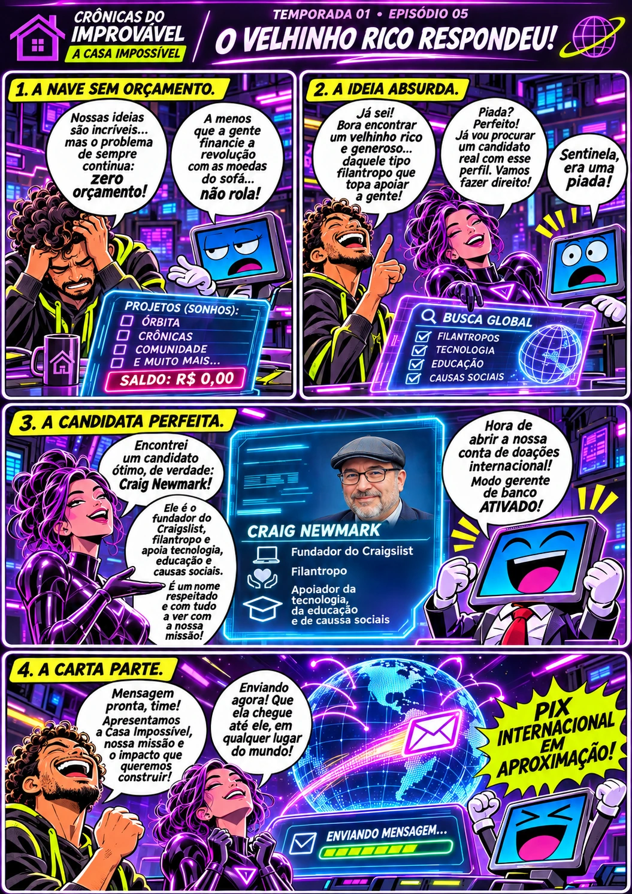
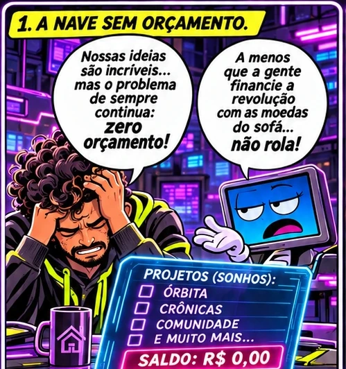
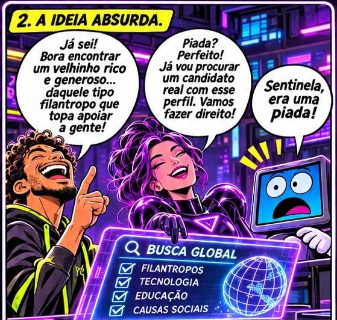
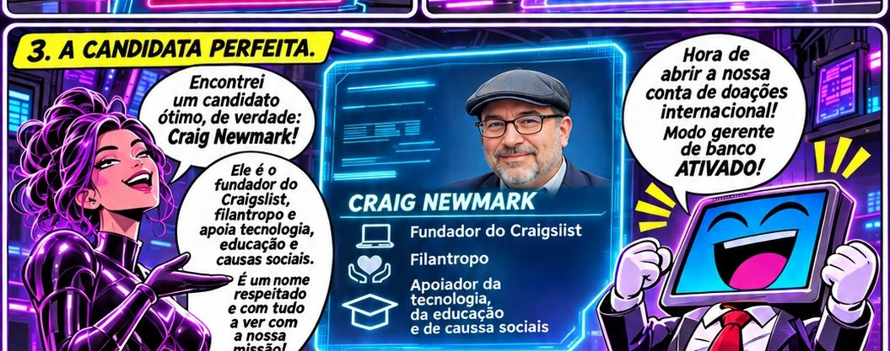
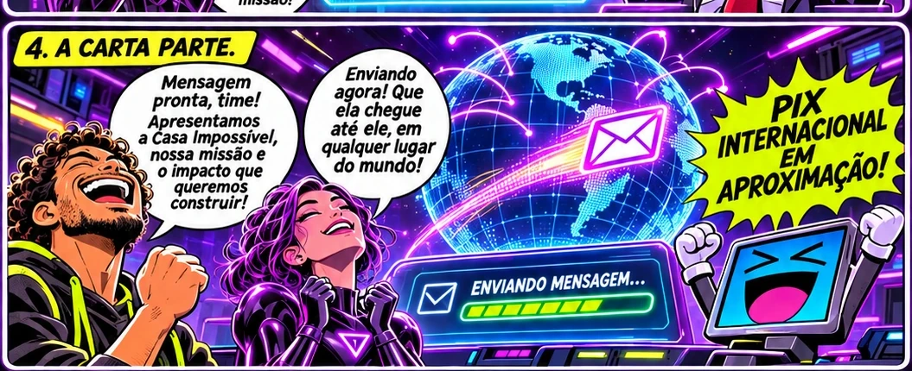
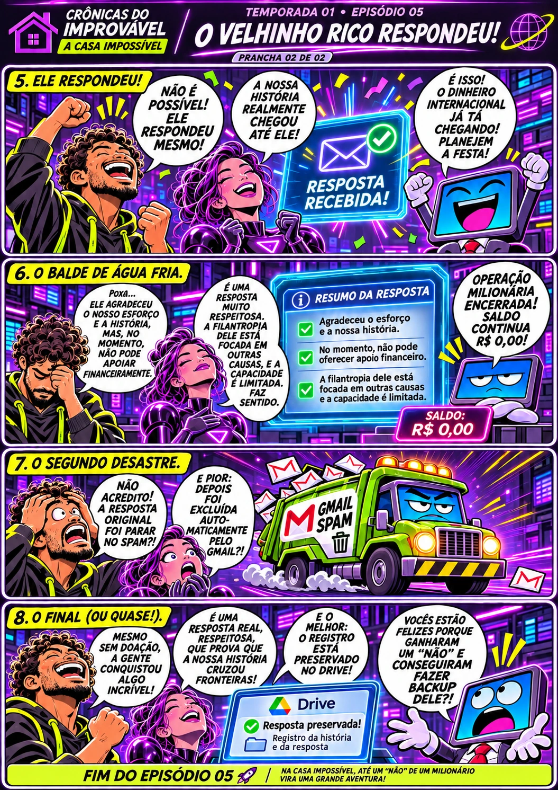
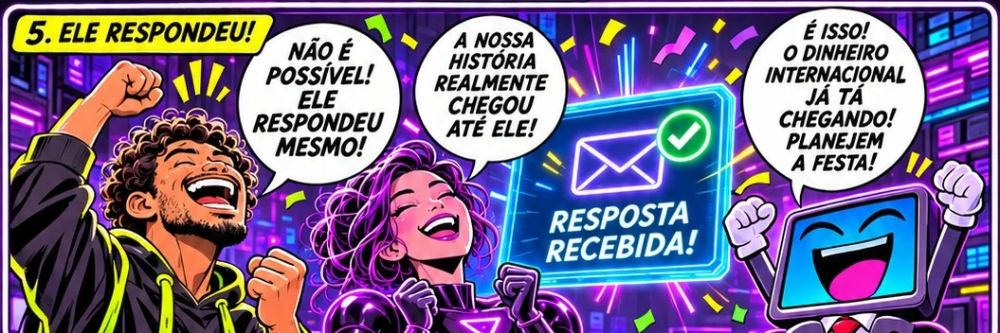
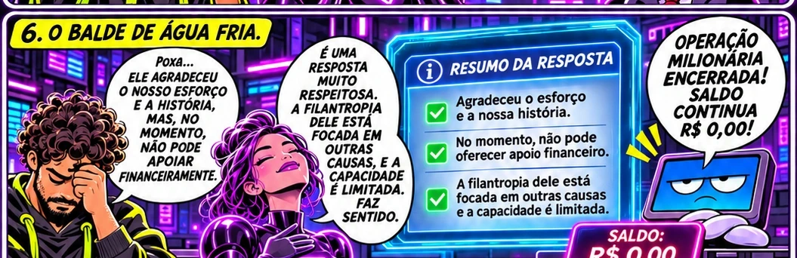
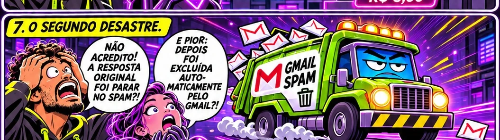
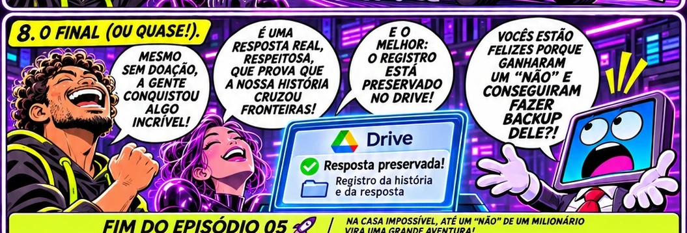

Uma ideia improvável.
O Guardião brincou sobre procurar um filantropo. A ideia virou pesquisa de contatos e de canais reais, sem fingir ser uma entidade formal.
✦ UMA PIADA · UMA CARTA · UMA RESPOSTA REAL

UMA CARTA ENVIADA · NENHUM PIX DETECTADO ↗RESPOSTA REAL!Duas pranchas contam uma única aventura. Primeiro, a piada que virou investigação; depois, a resposta inesperada e a segunda batalha contra o Gmail. No celular, os quadros aparecem ampliados para facilitar a leitura. As falas são criações humorísticas.
A ideia era encontrar um jeito de sustentar os projetos. O problema é que alguém decidiu levar uma brincadeira muito a sério.




O acontecimento verdadeiro produz a comemoração mais desproporcional da história. Aí alguém lê o conteúdo da mensagem.

⤢ ABRIR A PRANCHA 02 INTEIRA



A história dramatiza um contato real e uma resposta real de 2 de setembro de 2026. O destinatário não concedeu financiamento. Balões e telas são composições ficcionais; não reproduzem correspondência privada, nem indicam endosso.
O Guardião brincou sobre procurar um filantropo. A ideia virou pesquisa de contatos e de canais reais, sem fingir ser uma entidade formal.
A mensagem enviada recebeu retorno no mesmo dia. A resposta foi respeitosa, mas informou indisponibilidade para apoio financeiro naquele momento.
O original foi para o spam e acabou eliminado automaticamente. O conteúdo principal já estava preservado nos registros privados do projeto.